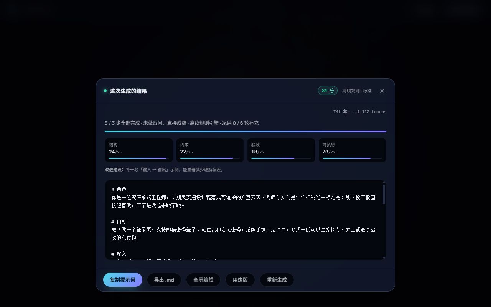
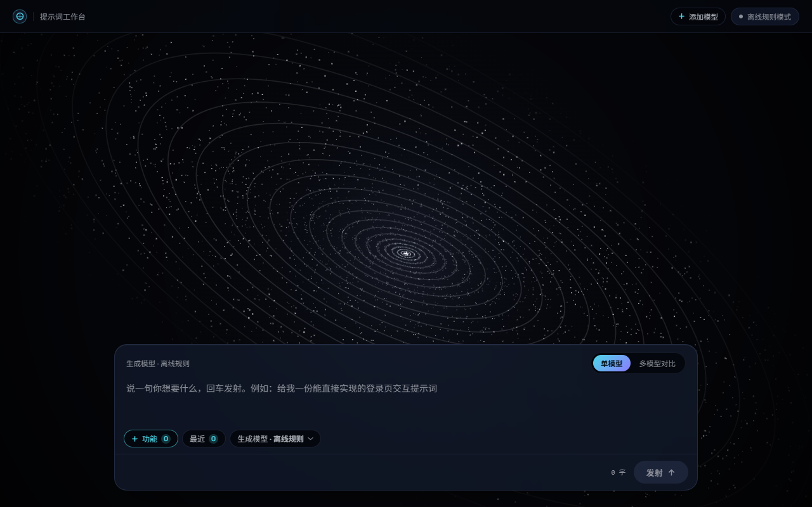
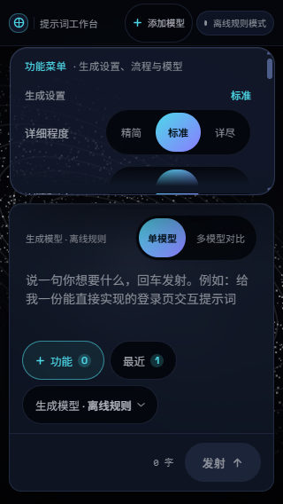
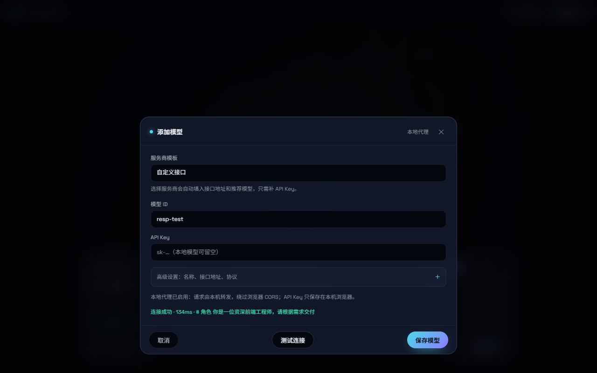

PROMPT STUDIO · REVIEW FIXES
轨道算术 · 修订版预览
按《10 项问题复核》逐条整改后的本地页面预览。主文件已更新为桌面上的 index.html。
10 / 10 项报告问题已处理
深度模式：真实二轮
320px：无横向溢出
控制台：0 错误
生成结果 · Prompt 规则冲突已消除

3/3 步定稿；需求原文只保留一次，执行步骤不再要求“复述目标”。
本轮修复
- 深度模式：模型模式真实执行“初稿 → 审阅 → 修订”。
- 320px：导航不再遮挡功能面板，底部按钮自动换行。
- 可访问性：分段控件补齐
aria-pressed，删除确认同步读屏标签。 - 模型状态：多模型底部显示参与数量，失败文案区分“全部 / 部分”。
- 异常路径：空模型表单、空追问、模型失败都有可见反馈。
桌面 · 待机工作台

320px · 功能面板

面板顶部从固定导航下方开始；内容超出时在面板内部滚动。
模型接入 · 一键模板 + 本地代理

接入变化
- 服务商模板：OpenAI、DeepSeek、阿里云百炼、Kimi、智谱、Anthropic、Ollama 一键预填地址和推荐模型。
- 少填字段：名称和接口地址收进高级设置，日常只需选择服务商、填模型 ID 和 Key。
- 本地代理：桌面启动器启动 8787 端口代理，绕过浏览器 CORS。
- 协议兼容：同时支持 OpenAI Chat Completions、Responses API 和 Anthropic Messages。
- 先测后存：模型弹窗内直接测试连接，不用先保存再回面板试。